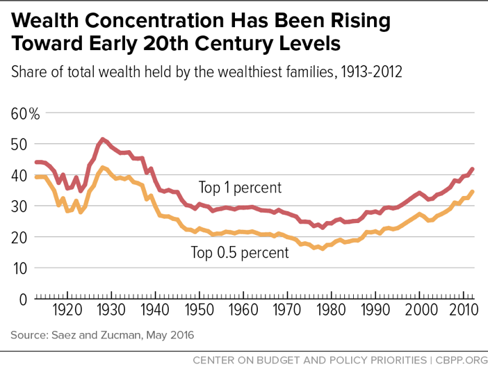
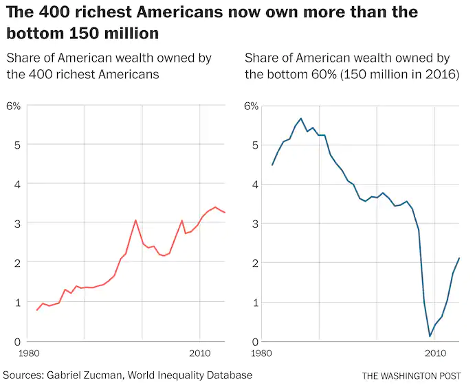

For as long as America has been an independent nation, economic and social inequalities between the rich and poor of America have made up the very fabric of society. The issues of economic disparity were only exacerbated during the early 1900s and the Roaring 20s (1920s).
The roots of this divide between the upper and lower classes began in the late 1800s in an era called the Gilded Age. The Federal Government practiced non-interventionist, laissez faire economic policy that essentially allowed the market to function by itself with minimum regulation or constraints. This governmental decision prompted a rise in the power and wealth of the upper class while decreasing that the working class. The rich who owned corporations were able to build up monopolies and large corporations that could set their own high prices, lower their workers’ wages, and increase the working hours of their employees. As a result of the rise of large multifaceted companies that dictated and practically controlled the markets, their owners profited immensely. The top 1% of society held a staggering 38.6% of all money and 4000 families held as much wealth as the rest of the 11.6 million.
The problem of wealth disparities grew and reached a peak during the Roaring 20s. In fact many historians believe that The Great Depression truly began in the 1920s for many of American Citizens, especially for those in the lower classes. The major reason fueling this lack of prosperity for the impoverished started from an overproduction of goods. During the First World War, both the agricultural and manufacturing had produced an abundance of crops and goods to keep pace with demand from domestic corporations and consumers in addition to America’s European Allies. Unfortunately for these industries, the demand for the overproduced goods and services did not keep up with the supply. Thus, a vicious cycle of overproduction was created to increase profit and therefore consumers were not able to afford a lot of the goods they wanted. Furthermore, the workers were not able to demand higher wages and lower wages due to the tremendous corporations maintained since the times of the Gilded Age.
Therefore the 1920’s were only “Roaring” for the very limited wealthy American citizens while the ordinary Americans struggled in one of the worst occurrences of income inequality of all of the Nation’s existence. In fact 60% of the Nation’s families earned less than the necessary amount required to support themselves. Meanwhile the percentage of wealth held by the rich jumped up from 12% to 19% during the 1920s.
Data from Center on Budget and Policy Priorities showing income inequality reaching its peak levels in the Early 1900s, especially the Roaring 20s
Data from The Washington Post showing the percentage of wealth held by various wealth classes in the United States over the past century.
For a period of time after The Great Depression and economic recovery in the 1930s and 1940s, with the increase in taxes to fund welfare and federal safety net programs, the income inequality rate in the United States decreased and the financial discrepancy between the Rich and Poor of America seemed to be repairing.
Unfortunately, the wealth concentrations of the early 21st century seem to directly mirror the trends just 100 years ago and many are tagging the status quo as the “new Roaring 20s”. The easy answer to why society is so financially stratified is due to modern day capitalism. With the growth of tech giants and large corporations such as Apple, Google, Facebook, and more, the leaders and high level executives behind them only get wealthier compared to the rest of the workforce. In fact, these ultra-rich top 0.1% of American Citizens have increased their wealth from 10% of total national wealth to 22% today, a dramatic increase.
When the top 0.1% increases their wealth by double, other classes are bound to financially struggle in its wake. In this case, only the bottom 90% of people actually gave up money to fuel the rapid growth of the ultra rich. This ended up creating a new wealth class never seen before, the top 9.9%, a group of rich people that did not suffer at the hands of the growing wealth of the top 0.1%. These people in the top 9.9% lead great lives that really demonstrate the power of wealth in America. For example, they have lower chances of developing disease, higher chances of maintaining a stable family structure, higher levels of education, expanded rich social connections, and most importantly the ability to pass all of their generational wealth on to their children.
This leaves the people in the bottom 90% in a troubling situation. Because money and wealth are so generational, it is becoming increasingly more difficult for these people to climb the symbolic social ladder as they never had a chance to have the same education or opportunities as those who were born into rich families. Furthermore, with the growth of so-called “aristocrats” investing more and more of their money into Wall Street and financial assets as time goes on, effectively blocking out the lower classes’ accessibility to wealth. All of these structural barriers culminate to produce a society where income inequality is exacerbated and invincible.
Even this year, the gap between the rich and the poor has grown tremendously, in ways that could never have been predicted. With the COVID-19 Pandemic, 74.7 million Americans have lost their jobs, a vast majority from the bottom 90%, causing approximately 25 million citizens to face real hunger and 37% of the adult population to rely on debt and loans to fund normal daily expenses, an incredibly dangerous course of action for the impoverished. While the poor are suffering under vastly suboptimal conditions surrounding the Pandemic, American billionaires, just 651 people, have grown their wealth by 1 trillion, an astounding 36% increase from prior.
With the lack of significant government investment into improving structural assistance for the people in poverty, these trends are likely to continue.
Data from The Washington Post comparing the share of wealth held by the 400 richest Americans and the bottom 60% of American Society.